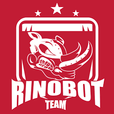

About Me

BIO
I'm 24 years old. I am a student in the 8th period of the
Information Systems course at the Federal University of Juiz de
Fora. Natural and resident of Juiz de Fora.
Interests include: videgames, chess, cats and challenges mental.
-
Data Structure Monitor
Java
I was the monitor of the disciplines Data Structure I and Laboratory of Programming II.
-

Rinobot
C++
I worked with the Rinobot team in the VSSS category (Very Small Size Soccer) Computer Vision sub-category. My responsibilities were to document and clean up the code.
During my stay in the team, we won a 3rd place award in the WinterChallenge2018 competition. -
Scientific initiation
Python
I worked on the project "Generation of Adaptive Curriculum Sequences based on the Profile of Students and Teaching Materials using the Prey-Predator Algorithm"(Geração de Sequncias Curriculares Adaptativas baseada no Perfil dos Alunos e Materiais Didáticosutilizando o Algoritmo Presa-Predador) with data extraction with genetic and evolutionary algorithms.
-
Course Completion Work
Engenharia de Software
I am currently doing my Course Completion Work on correcting and improving the BVR (Base Variability Resolution) tool.
-

GET-Grupo de Educação Tutorial (tutorial education group)
Javascript
During my participation in the GET team I helped in the development of an application using the expo tool.